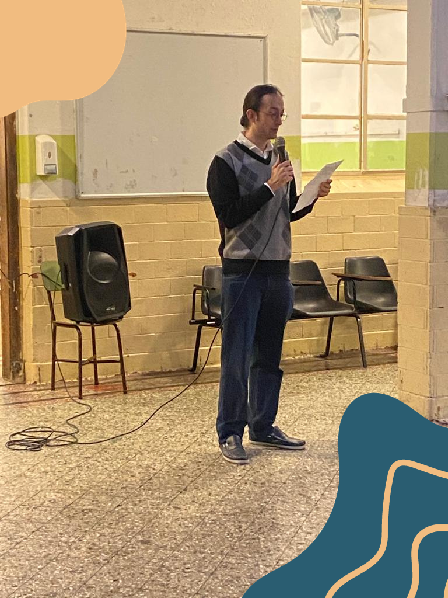

Acto conmemorativo del 17 de Junio y 20 de Junio
Por: Bruno Alonso 5ºA
Jornada escolar con significado: Solidaridad, amistad y reflexiones sobre la Bandera.
El jueves 22 de junio se realizó al comienzo de la jornada escolar el acto conmemorativo del Día de la Bandera, en el que participaron los profesores Ana Inés Rodríguez, Víctor Zanon y Carlos Perez. Ambos dieron un discurso en el que abordaron diversos temas, como la solidaridad con el pueblo de Jujuy, la amistad entre Güemes y Belgrano destacando su lucha conjunta por la independencia y los valores que compartían, la introducción al Día de la Bandera y el homenaje a Manuel Belgrano, y una reflexión sobre el valor de la amistad en una sociedad individualista.

Además, finalizando el evento, tres estudiantes (uno de 5°B y dos de 5°A) presentaron las banderas que habíamos creado en cada curso y explicaron el significado de cada una:
Por parte de 5º A explicamos que el centro de la bandera representa el fuego que aparece en la insignia de la escuela, mientras que los colores fueron elegidos por los estudiantes que la hicieron.
Mientras que 5º B explicó que realizaron el escudo del colegio ya que es algo que llevamos diariamente en el uniforme del colegio y nos acompaña todos los días.